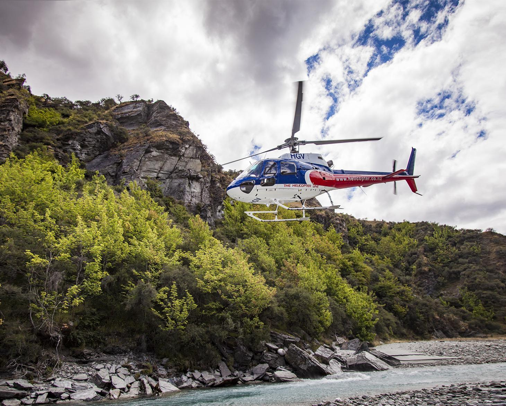
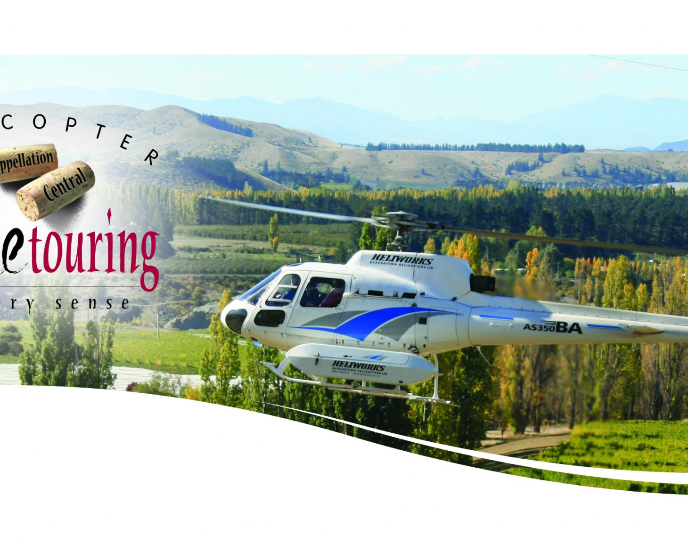
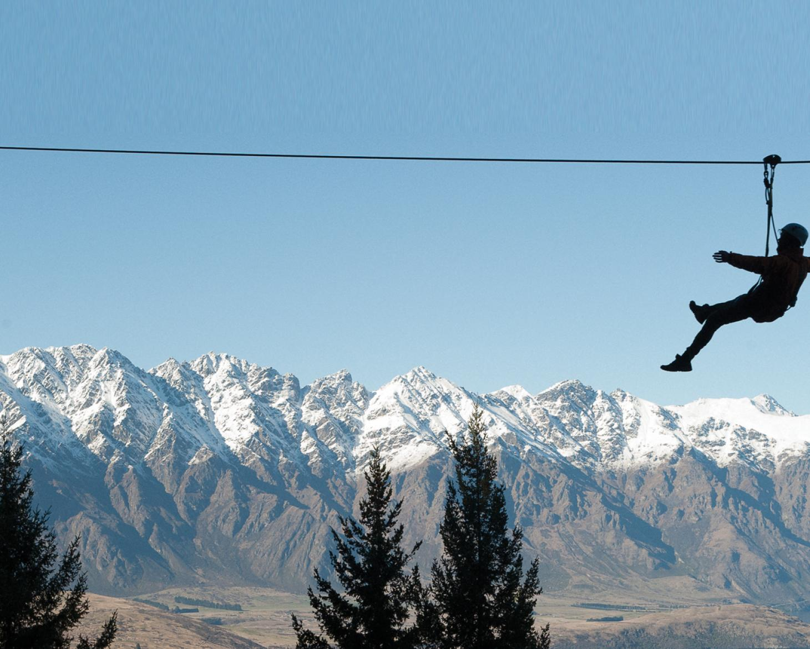
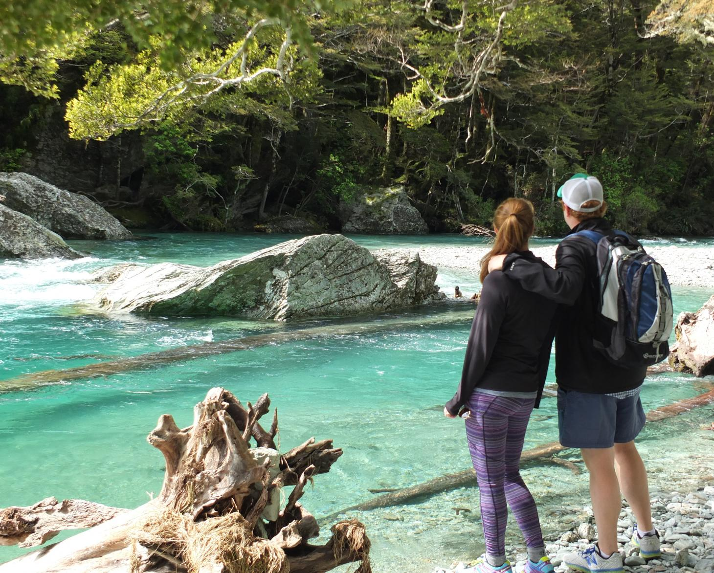
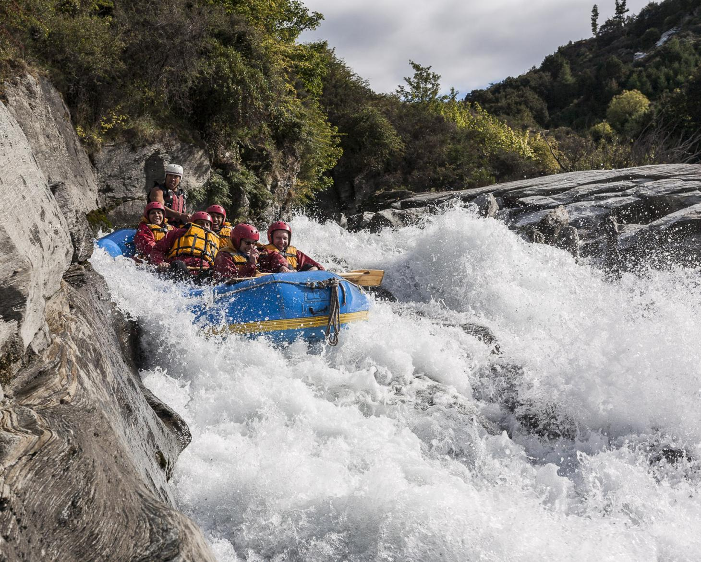
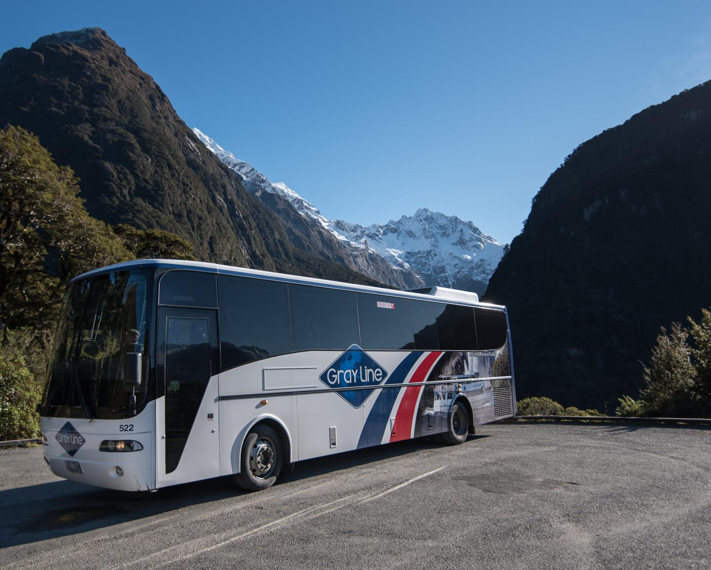

Shotover Heli Rafting
Experience a scenic helicopter flight into rafting launch site deep within Skippers Canyon for the mighty Shotover River.

Heli & Wine Central Wine Tours
Helicopter wine touring brings together the essence of the exquisite tastes in one breathtaking package.

Moa 4 line and Kea 6 line tours.
Join this award winning zipline adventure through the forest canopy high above Queenstown for some thrill seeking fun.

Routeburn Valley Walk
A perfect day walk for photographers, nature lovers in Mt Aspiring National Park. Picnic lunch included.

Raft Gondola Luge Combo
Conquer the whitewater rapids of the famous Shotover River before heading up the Skyline Gondola to zoom down the two 800m Luge tracks

Milford Sound Day Tour & Cruise
You can now discover world famous Milford Sound with GrayLine on a full day tour and experience it's captivating beauty.